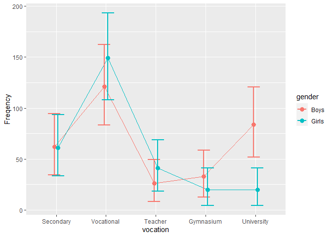

The library ANOFA provides easy-to-use tools to analyze frequency data. It does so using the Analysis of Frequency datA (ANOFA) framework (the full reference Laurencelle & Cousineau (2023)). With this set of tools, you can examined if classification factors are non-equal (have an effect) and if their interactions (in case you have more than 1 factor) are significant. You can also examine simple effects (a.k.a. expected marginal analyses). Finally, you can assess differences based on orthogonal contrasts. ANOFA also comes with tools to make a plot of the frequencies along with 95% confidence intervals (these intervals are adjusted for pair- wise comparisons Cousineau, Goulet, & Harding (2021)); with tools to compute statistical power given some a priori expected frequencies or sample size to reach a certain statistical power. In sum, eveything you need to analyse frequencies!
The main function is anofa() which provide an omnibus analysis of the frequencies for the factors given. For example, Light & Margolin (1971) explore frequencies for attending a certain type of higher education as a function of gender:
## G df Gcorrected pvalue etasq
## Total 266.889 9 NA NA NA
## vocation 215.016 4 214.668 0.0000 0.258428
## gender 1.986 1 1.985 0.1589 0.003209
## vocation:gender 49.887 4 49.555 0.0000 0.301949A plot of the frequencies can be obtained easily with
anofaPlot(w) 
Owing to the interaction, simple effects can be analyzed from the expected marginal frequencies with
e <- emFrequencies(w, ~ gender | vocation )
summary(e)## G df Gcorrected pvalue etasq
## gender | Secondary 0.00813 1 0.008124 1.0000 0.000066
## gender | Vocational 2.90893 1 2.906575 0.5736 0.010659
## gender | Teacher 3.38684 1 3.384098 0.4957 0.048118
## gender | Gymnasium 3.22145 1 3.218840 0.5219 0.057299
## gender | University 42.34782 1 42.313530 0.0000 0.289364Follow-up functions includes contrasts examinations with `contrastFrequencies()’.
Power planning can be performed on frequencies using anofaPower2N() or anofaN2Power if you can determine theoretical frequencies.
Finally, toRaw(), toCompiled(), toTabulated(), toLong() and toWide() can be used to present the frequency data in other formats.
Installation
Note that the package is named using UPPERCASE letters whereas the main function is in lowercase letters.
The official CRAN version can be installed with
install.packages("ANOFA")
library(ANOFA)The development version 0.1.1 can be accessed through GitHub:
devtools::install_github("dcousin3/ANOFA")
library(ANOFA)The library is loaded with
For more
As seen, the library ANOFA makes it easy to analyze frequency data. Its general philosophy is that of ANOFAs.
The complete documentation is available on this site.
A general introduction to the ANOFA framework underlying this library can be found at the Quantitative Methods for Psychology Laurencelle & Cousineau (2023).